We are currently sharing the impact of our research through small scale impact meetings, if you are interested in hearing more please reach out to James Williams.
We are investigating the continued possibility of an ongoing series of working group meetings. Please check back soon for more information.
The initial meetings that took place during the first three months of the LWSWG focused on sharing the results of the PhD research conducted as part of the Horizon CDT. The meetings were conducted with a range of stakeholders, including industry partners. Our ongoing focus is to now explore future funding opportunities and the continued meeting of a working group.
We intend to continue exploring the formation of a LWSWG, with the aim of sharing the impact of our research and expand a wider network of interested parties.
Based on the discussions from the LWSWG, we are now investigating the formation of a similar academic-focused Platial Research Network.
